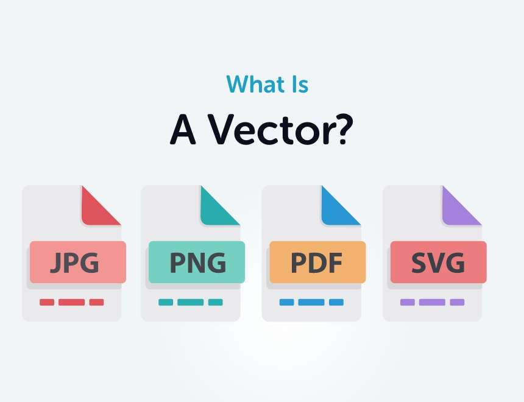

Design
Vector Files, what are they?

When you’re working on graphic design projects, you’ll often hear the term “vector file” come up. These files are essential for making sure your designs look sharp and professional, whether it’s a logo, illustration, or any kind of visual that needs to be resized. In this post, we’ll break down some of the most common questions about vector files and explain why they’re so important, what programs you need to work with them, and the pros and cons to keep in mind.
What is a vector file?
A vector file is a type of image file made up of mathematical paths instead of pixels. Unlike JPEGs or PNGs, which are composed of tiny squares of color (pixels), vector files are created using points, lines, and shapes. This means they can be resized infinitely without losing any quality, which is why they’re a go-to for things like logos and illustrations.
Why are vector files important for design?
Vector files are crucial in graphic design because they give you the flexibility to resize an image without it becoming pixelated or blurry. If you’re creating something that needs to be printed at multiple sizes—like a logo for a business card and a billboard—vector files make sure it looks perfect no matter the scale.
What are common vector file formats?
There are a few different file formats for vectors, and each serves a slightly different purpose. Here are the most common ones:
- AI (Adobe Illustrator): This is the standard format used in Adobe Illustrator, one of the most popular tools for vector design.
- EPS (Encapsulated PostScript): A versatile format that works well across many design programs, often used in print.
- SVG (Scalable Vector Graphics): Perfect for the web, SVGs are great for responsive logos and icons.
- PDF (Portable Document Format): While we usually think of PDFs as documents, they can also contain vector images, which makes them handy for sharing designs.
How are vector files different from raster files?
Raster images, like JPEGs and PNGs, are made up of pixels, so they have a fixed resolution. This means if you try to make them bigger, they can become pixelated and lose clarity. Vector files, on the other hand, are resolution-independent, meaning they can be resized without any loss of quality. That’s why vectors are ideal for things like large-scale prints or detailed logos.
Can I convert a raster image into a vector?
Yes, you can convert raster images into vector files, but the results depend on the complexity of the original image. Programs like Adobe Illustrator have tools (like Image Trace) that can convert a simple graphic into a vector. However, for more complex images—especially detailed photos—conversions might not come out perfectly.
Do I need special software to open or edit vector files?
Yes, you’ll need specific software to open and edit vector files. Some of the most popular programs include:
- Adobe Illustrator: The industry standard for vector graphics.
- CorelDRAW: Another powerful tool for working with vector designs.
- Inkscape: A free alternative for creating and editing vectors.
- Affinity Designer: A more affordable option with robust vector editing tools.
Some formats, like SVG, can also be opened in web browsers, but if you want to fully edit them, you’ll need one of these design programs.
Why do printers prefer vector files?
Printers love vector files because they ensure the best quality output, especially when it comes to large-format printing. Since vectors can be scaled without losing resolution, they’re perfect for printing large graphics like posters or banners, where clarity and sharpness are key.
What is an outline or outlined text in a vector file?
Outlined text is simply text that has been converted into vector shapes. This ensures that your design looks exactly the same on any computer, even if the font isn’t installed. Outlined text behaves like any other vector object, making it easier for printers and other designers to work with.
Can vector files be used on the web?
Absolutely! SVG is a popular vector format for the web because it’s scalable, lightweight, and ideal for responsive design. You’ll often see SVGs used for logos, icons, and illustrations on websites because they stay sharp at any size and load quickly.
How do I know if I need a vector file?
If your design needs to be resized for different uses, like a logo that will be printed on everything from business cards to large signs, you’ll want to use a vector file. Vectors are also the best option when you need the highest quality printing and professional results.
Why Use Vector Files for Logos?
Logos are a key part of any brand’s identity, and using vector files for them is crucial for several reasons:
- Scalability: Logos need to be used in various sizes, from tiny icons on a website to large signs or billboards. Vector files ensure your logo looks sharp and clear at any size.
- Versatility: Vector files are easy to adjust, allowing you to make changes or tweak your logo design without compromising quality.
- Consistency: A vector logo maintains its appearance across different mediums and formats, ensuring that your brand’s image remains consistent whether it’s on a business card, merchandise, or a digital ad.
- High Quality: For professional printing, vector files provide the best quality. They ensure that your logo is crisp and clean, with no pixelation or distortion.
Why use a vector file?
There are a lot of reasons why vector files are essential for graphic design:
- Scalability: You can resize vector files as much as you want without losing any quality.
- Small file sizes: Compared to high-resolution raster files, vector files are usually smaller and easier to share.
- Highly editable: It’s easy to make changes to vector shapes, colors, and other design elements.
- Perfect for logos and branding: Vectors are ideal for creating logos that need to be used across multiple platforms and sizes.
What programs use vector files?
Several programs support vector files, each with its strengths. Some of the most common ones include:
- Adobe Illustrator: The go-to for most professional designers.
- CorelDRAW: Another strong option for vector work, especially in print.
- Inkscape: A free alternative for creating and editing vectors.
- Affinity Designer: A cost-effective option with robust vector editing tools.
- Sketch: Primarily used for UI design but also supports vector formats.
- Figma: Great for web design and UI designs but can also be use for logos.
What are the pros and cons of vector files?
Pros:
- Infinite scalability: You can resize a vector file as much as you like without losing any clarity.
- Smaller file sizes: Vectors usually take up less space than high-resolution raster files.
- Highly editable: It’s easy to make changes to vector shapes, colors, and other design elements.
- Perfect for logos and branding: Vectors are ideal for creating logos that need to be used across multiple platforms and sizes.
Cons:
- Not great for detailed images: Vectors work best for simpler designs like logos and illustrations, but they aren’t ideal for photo-realistic images.
- Requires specific software: You’ll need a program like Illustrator or Affinity Designer to edit or create vector files.
- Learning curve: Working with vectors can take some time to master, especially for beginners.
Vector files are a powerful tool in any designer’s kit, offering flexibility and quality across a wide range of projects. Understanding how to use them—and when to use them—will ensure that your designs look professional and stand out, whether they’re printed or displayed online.